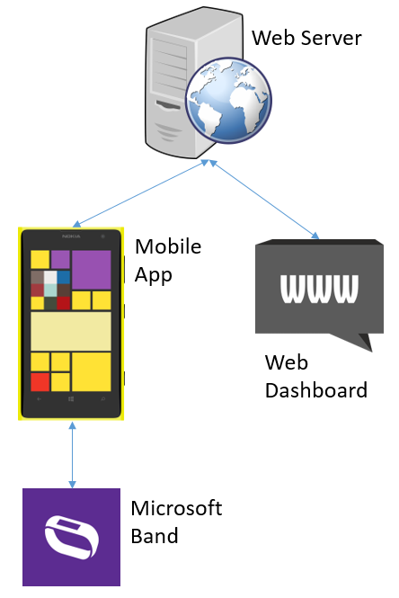

Architectural Diagram
Below is a diagram that shows the components of the system and how they are connected with each other:
Description of each component, along with interactions with each other:
- Mobile application: The core of our system, the mobile application is divided into three pages:
- Dashboard: The main page of the app, this page shows the sensor data polled from the Microsoft Band when the user is working, and also allows the user to send this data to the server with the Check In and Panic buttons
- Notifications: Displays previous messages received from the web dashboard via the server, and allows the user to reply by sending a text message to the server, which will be passed to the web dashboard
- Profile: Shows the user's data such as the user's name, which can be edited. This user data is sent to the server when the user sends a message to the server.
- Microsoft Band: The Microsoft Band is used to read the user's vitals data such as heart rate and skin temperature using its in-built sensors. The mobile application requests the sensor data every minute while the user is working.
- Web Server: Built using Node.js and Heroku, the server handles HTTP requests from the mobile app and the web dashboard, stores messages sent by the mobile app to be displayed by the web dashboard, and stores the last broadcasted message by the dashboard to be sent to active instances of the mobile application
- Web Dashboard: The dashboard, meant to be used by the Head Office, displays messages sent by the mobile application through the server, as well as allowing the Head Office to broadcast a message to every user (sent through the server).
Technical Achievements and Implementation Details
Over the course of our project, we have managed to achieve the following:
- Connect the mobile application with the Microsoft Band, using the Band SDK
- Poll sensor data from the Microsoft Band automatically every minute while the user is working
- Use the phone's built in timer to record time elapsed, as well as automate polling sensor data from the Band
- Determine the user's location, using the phone's built in GPS sensors
- Save the user's profile (name, e-mail, etc.) in the phone's local storage settings
- Send a HTTP POST request to the server, containing the sensor data, from the mobile app, to send a message to the web dashboard through the server
- Send a HTTP GET request automatically every minute, using the phone's built in timer, to check if there is any new notification from the web dashboard
- Receive and read the HTTP response for said request, and display the message from the web dashboard as a phone notification, and also send the notification to the Band which displays it as a Band notification
- Serialise and store the previously received notifications on the phone's local storage, and display a list of previously received messages on the mobile app, along with the ability to clear the previously stored notifications
- Create a working three-page navigation system on the mobile app
- Display a list of messages sent by the mobile app, sorted by time received by the server, on the web dashboard
- Allow the web dashboard to send a broadcast notification that is sent through the server to all active instances of the mobile application, which receives the notification using an automated HTTP GET request
To implement our system, we used the following services, packages, and extensions:
- Microsoft Band SDK - .NET package that we used for the mobile app to communicate with the band e.g. poll sensors, send notifications
- Json.NET - .NET package that we used to serialise C# objects to a JSON format to be saved and loaded locally as a string
- Microsoft HTTP Client Libraries - .NET package that we used to send HTTP requests to the server from the mobile app.
- Heroku - Web service that we used for our web server and web dashboard
- Node.js - Javascript runtime environment for server-side Web applications, used on the web server.
- Express - A Node.js extension used in the web dashboard and web server
- BodyParser - A Node.js extension used to read the body of incoming HTTP requests to the web server
Design Patterns
Below are the design patterns that we used in our system:
- Singleton/State: We used the Singleton and State design pattern for the BandManager class, which handles communication between the mobile app with the Microsoft Band. When the app is initialised, the main page initialises a public, static instance of BandManager which is then accessed by other classes. This allows us to store the state of the connection in a single instance which can be read and written and changes are immediately visible by all accessors.
- Front Controller: Our system is built on a centralised web service that handles all requests, both coming from the mobile application and the web dashboard. This ensures that in the future, if additional apps are built on the system (for instance, an iOS or Android port of the mobile app), it all connects together to the same server and can be accessed through one web dashboard.
- Module: We grouped together similar methods with similar functions and dependencies into a container class as static methods. One such example is the HttpManager class that handles HTTP GET and POST requests from the mobile app to the web server.
- Task-based Asynchronous Pattern: We used asynchronous methods to have greater control over the sequence in which our app runs code and avoid unwanted interferences e.g. two different threads trying to poll sensors from the Microsoft Band at the same time. This design pattern is built in to C# using the async, await, and Task keywords.